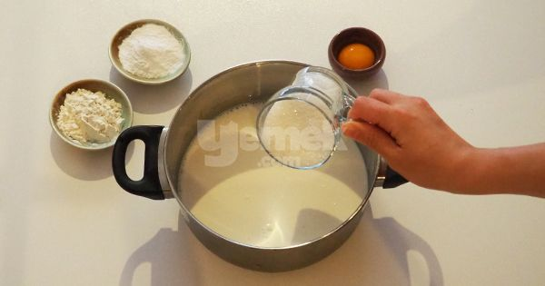
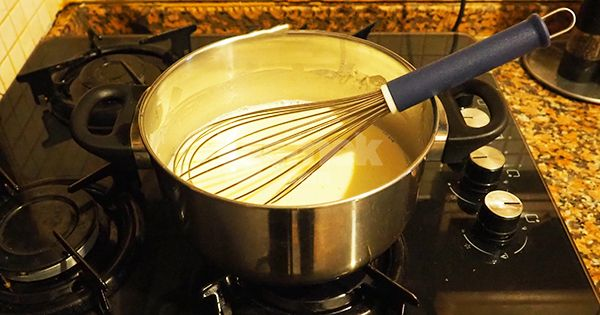
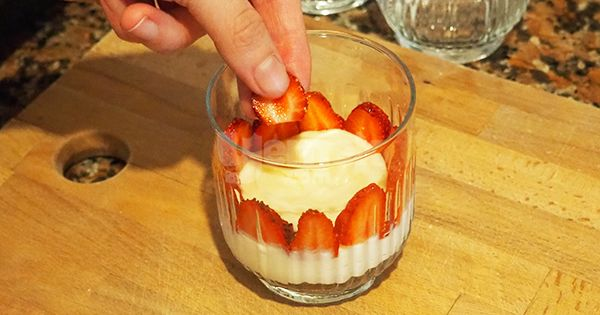

~ Magnolia ~
İçinde yumuşacık bir puding var. Ama bildiğimiz pudinglerden çok daha lezzetli, kıvamı çok daha farklı. Mevsimindeyse mis kokulu çilekler de işin içerisine dahil oluyor. Çay saatlerinizde şık sunumuyla tüm puanları toplayabileceğiniz bir ikramlık, akşam yemeklerinizin üzerine de afiyetle tüketebileceğiniz hafif bir sütlü tatlıya dönüşüyor.
Kaç Kişilik: 6 kişilik
Hazırlama Süresi: 15 dakika
Pişirme Süresi: 15 dakika
Magnolia Tarifi İçin Malzemeler:
Genel Malzemeler:
- 5 su bardağı süt
- 1 su bardağı toz şeker
- 1 paket vanilya
- 1 adet yumurta sarısı
- 2 yemek kaşığı nişasta
- 2 yemek kaşığı un
- 1,5 çay bardağı krema
İçi İçin:
- 1 paket bebe bisküvisi
- 15-20 adet çilek
Magnolia Nasıl Yapılır?
- Bir tencerenin içerisine süt, şeker, nişasta, un ve yumurta sarısını aktarın. Güzelce karıştırın.

- Orta ateşte, sürekli karıştırarak muhallebi kıvamına gelene dek pişirin.

- Ocaktan alıp vanilyayı ekleyin ve karıştırın.

- Ilımaya başlayan kremayı ilave ederek karıştırmaya devam edin.

- Bu sırada bisküvileri rondodan geçirin. Çileklerin saplarını çıkararak dilediğiniz boyutlarda kesin.

- Soğuyan pudinginizden birkaç kaşık alın. Bir kupun tabanına yayın. Üzerine bisküvi ve çileklerden ilave ederek katlar çıkın. Tüm bisküvi, puding ve çilekler bitene kadar kuplara bu şekilde bölüştürün.

- Ardından buzdolabında 3-4 saat kadar soğumaya bırakın. Servis aşamasında üzerini bisküvi, çilek ya da muz, çikolata sos gibi farklı malzemelerle süsleyerek servis edin.

Afiyet Olsun...